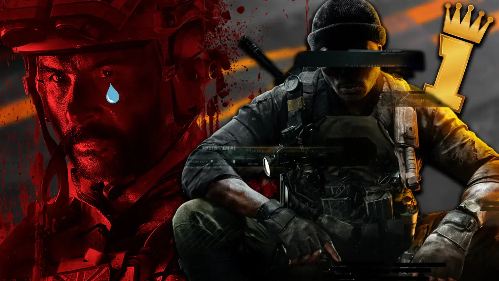
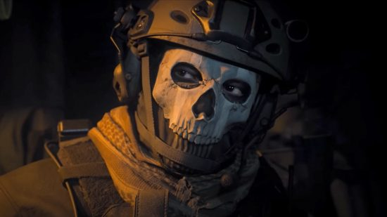

Cual sera el futuro de Call of duty: MW3??
Con la salida de Call of Duty: Black Ops 6, es probable que Call of Duty: Modern Warfare 3 experimente una disminución en la atención y el número de jugadores activos. Los nuevos lanzamientos suelen atraer a la mayoría de los jugadores debido a las nuevas mecánicas, gráficos mejorados y contenido fresco. Sin embargo, Modern Warfare 3 seguirá siendo relevante para los jugadores que disfrutan de su historia y modo multijugador establecido.

Activision también podría lanzar actualizaciones y eventos especiales para mantener el interés en Modern Warfare 3 mientras se promueve el nuevo título.
 